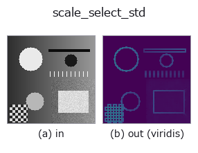

texture op• 資料種類:image → image
• 呼叫:fullseye.apply(img, "scale_select_std", a=0.5, b=0.5)(2-D 的模型是一張圖 + 兩個純量旋鈕 a,b∈[0,1])

*圖為在 128×128 合成輸入上實際執行的輸出。左為輸入，右為輸出。點雲以俯視散點顯示(亮度 = z)，一維序列為折線，體資料為沿 z 的最大值投影，影片為中間影格，複數影像為振幅；無法成像的回傳值直接顯示數值。*
*輸出以類 viridis 偽彩色顯示(深紫 = 小，黃 = 大)，便於讀取距離、相位、方向、深度這類「量的場」。*
掃描旋鈕 a(0.1 / 0.5 / 0.9，另一旋鈕取預設):
▸ scale_select_std: 旋鈕 a 掃描 (文件網站)
掃描旋鈕 b(0.1 / 0.5 / 0.9，另一旋鈕取預設):
▸ scale_select_std: 旋鈕 b 掃描 (文件網站)
換別的影像(合成場景 / 照片 / 硬幣。上排為輸入，下排為對應輸出。旋鈕取預設):
▸ scale_select_std: 其他輸入影像 (文件網站)
*第 4 欄是彩色 (H,W,3) 輸入。此運算子能正確處理顏色而不跨通道(不把顏色通道當作第三個空間軸摺積)。*
逐像素選擇視窗大小的局部標準差(Lepski / ICI 規則)。
視窗越寬估計越穩定（相對標準誤差 1/sqrt(2(n-1))），但邊緣會模糊、解析度會下降 —— 只要選定 1 個大小，這個矛盾就無法解決。解法是「既不在時間上也不在空間上，而是每個位置各有不同的答案」：從小視窗開始依序，只在估計值的信賴區間持續相交期間擴大視窗，在不再相交的前 1 個停下。平坦處自動選擇大視窗（穩定），邊緣附近自動選擇小視窗（不模糊）。
a 是嘗試的視窗上限（到 3,5,7,9,11,13,15 中的哪一個為止），b 是信賴區間的倍率 gamma（1.0〜3.0）。gamma 越大視窗越容易擴展（偏向穩定）。
與 local_std 的關係：local_std 固定視窗。為了收緊平坦部的估計而擴大視窗會使邊緣模糊，此 op 按位置解決這一取捨。在保持邊緣銳利的同時只降低平坦部的誤差是其優點，代價是計算量隨視窗數增加。
適用條件：(1) 「是否相交」的判定依賴於誤差界正確 —— 對於非白雜訊（有空間相關）的雜訊，視窗會擴得過大。(2) gamma 太小時總是選中最小視窗，結果與 local_std 的 3x3 相同（這是判斷其未起作用的方法）。
• gallery2d_texture_freq 族使用指南
• 範例資料目錄(下載 URL / 授權) —— 2-D 用 skimage.data(BSD/公有領域)加合成圖,3-D 給出真實資料源(Stanford/PDS 等)的下載 URL。
• 運算子來歷與參考文獻 —— 該運算子族所依據的研究/方法出處。
• 演算法的正典(作者、年份)與用途見上面的族使用指南。
下面的程式已確認可以執行(與圖相同的輸入)。在 Studio 說明中，此區塊會變成按鈕，可當場載入並執行。
scale_select_std 0.50 0.50
• gallery2d_texture_freq — py -3.11 examples/gallery2d_texture_freq.py
image 作為輸入)identity · gaussian · mean_box · bilateral · unsharp · median · min_filter · max_filter
texture)std_filter · local_bimodality · local_std · bootstrap_std_error · structure_tensor_orientation · structure_tensor_coherence · gabor · sk_frangi
*Provenance: ops.py — 2D 運算子登記表。本條目由 tools/opdocs.py md 自動產生(請勿手動編輯)。*
© 2026 Kazufumi Furuse — Fullseye operator documentation. Licensed under Apache-2.0.